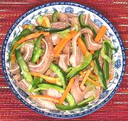

|
Pig Ear SaladChina | ||||
| Serves: Effort: Sched: DoAhead: |
6 salad ** 1-3/4 hrs Best |
A crunchy Chinese style salad with interesting textures and excellent flavor. Light, but more substantial than rabbit food salads. Serve anywhere you want to separate the men from the boys - if it's a motorcycle meet call them "Hog Ears". | |||
|
1 3 1 4 1 3 1/2 1/2 1/4 1/2 ----- ar |
# in oz # c t t T --- |
Pig Ears (1) Star Anise Ginger fresh Carrot Cucumber (2) Scallions Plum Sauce Salt Pepper Rice Vinegar -- Garnish Sesame seeds toasted |
Make - (1-3/4 hrs)
|
cgm_pigear1 061209 iovm - www.clovegarden.com
©Andrew Grygus - agryg@aaxnet.com - Linking to and
non-commercial use of this page is permitted.